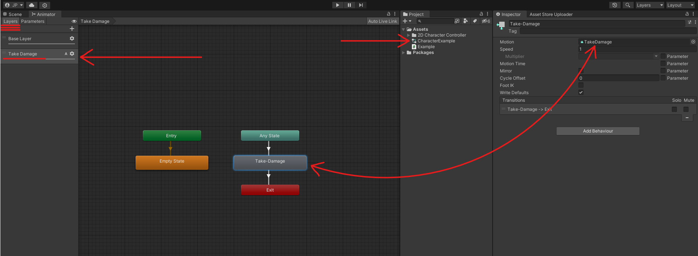
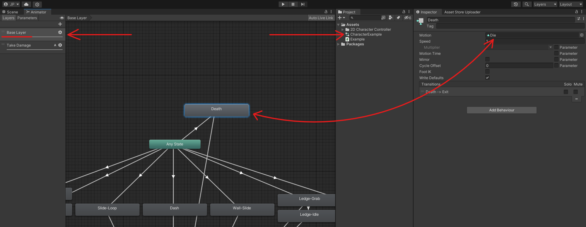
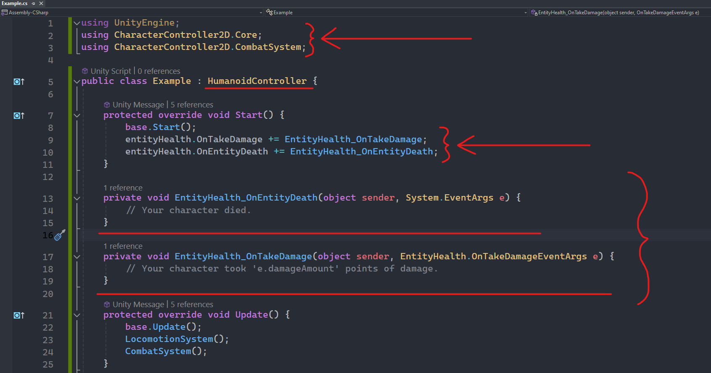
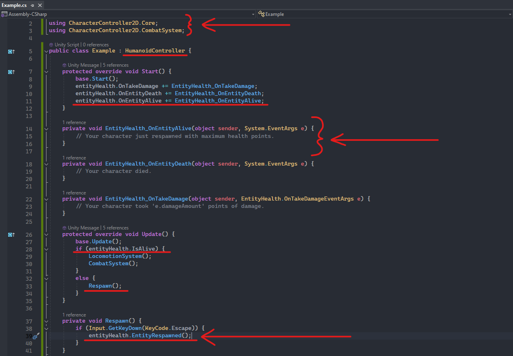

Introduction
The EntityHealth component is responsible for managing all aspects of your character's health mechanisms. These include:
- Damage Taken
- Death
- Respawn
- Health Regeneration
To modify a character's health points in any way, you will interact directly with the EntityHealth
class.
For more detailed instructions on how to use the component and the potential outcomes of interacting with it, please refer to its dedicated documentation page. (Scripting)
Take Damage and Death Animations
The "Take-Damage" animation is placed on a separate, additive layer of the animator, providing flexibility for different damage effects. The "Dead" animation is located on the main layer. By default, invoking TakeDamage will cause the character's sprite to flash without disrupting the current animation. If the damage surpasses the character's current health points, the "Dead" animation will activate. These animations can be configured similarly to other animations as detailed on the Character Setup page.
 
Utilizing the damage system
Custom functionality can be added by attaching listeners to the EntityHealth events. The OnTakeDamage event is triggered when the character takes damage, allowing you to execute custom logic. If the character dies, both OnTakeDamage and OnEntityDeath events are triggered, enabling you to implement custom death logic.

Respawn your characters
When a character dies, the EntityHealth component is disabled. To reactivate it, it is crucial to invoke the EntityRespawned function in your respawn logic once the character is ready to be controlled again. This re-enables the component and triggers the OnEntityAlive event, allowing for the execution of custom logic upon character respawn.
